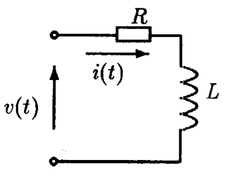

Séance 1¶
Objectifs de la séance¶
Utiliser les fonctions de base de control designer toolbox
Tracer et analyser une réponse indicielle d’ordre 1 et 2
Analyser le comportement d’un circuit RC/RL
Analyser le comportement d’un moteur avec ou sans self
Avant de commencer¶
Attention
Afin de pouvoir pour la suite utiliser les fonctions utiles, il est nécessaire d’importer dans chaque nouveau script les packages suivant:
from control import matlab as ml # Python Control Systems Toolbox (compatibility with MATLAB)
import numpy as np # Library to manipulate array and matrix
import matplotlib.pyplot as plt # Library to create figures and plots
import math # Library to be able to do some mathematical operations
import ReguLabFct as rlf # Library useful for the laboratory of regulation of HELMo Gramme
Etude d’un système du premier ordre : RC¶
Soit la fonction de transfert d’un circuit RC (avec \(R = 205 \Omega\) et \(C = 33 pF\)):
Ecriture de la fonction de transfert du circuit RC¶
num = 1
den = [6.8e-9, 1]
H = ml.tf(num, den)
print("H = ", H)
H =
1
-------------
6.8e-09 s + 1
Attention
Ne pas confondre . et , !
Tracé de la réponse indicielle¶
rlf.step_(H);
Note
Le ; en fin de ligne n’est pas nécessaire dans Spyder. Il est juste là pour éviter d’afficher des informations non nécessaires lors de la compilation de cette page.
La fonction step_ adapte automatiquement l’échelle des axes. Si vous voulez spécifier l’axe du temps :
# Réponse à un échelon pendant 50ns (avec calcul toutes les ns)
T = np.linspace(0, 50e-9, 50) # Création vecteur T avec comme paramètres: début, fin, nbreElements
rlf.step_(H, T);
Etude d’un système du premier ordre : moteur sans self¶
Lors de l’étude de l’application 1 d’asservissement de vitesse, nous avons montré que le moteur est décrit par la fonction de transfert :
Lien avec la théorie
L’application du moteur est détaillée au §2.6.4.1 p.2-16 (p.42 dans le PDF)
Ecriture de la fonction de transfert du moteur¶
num = 31.25
den = [10.875e-3, 1]
H = ml.tf(num, den)
print("H = ", H)
H =
31.25
-------------
0.01087 s + 1
Attention
Ne pas confondre . et , !
Tracé de la réponse indicielle¶
rlf.step_(H); # Tracé de la réponse indicielle
Considérations à propos du gain statique¶
Le gain statique est la valeur finale, la valeur atteinte en régime établi :
info = rlf.stepWithInfo(H, NameOfFigure="Step Response with informations") # Même fonction que step_ avec le relevé et l'enregistrement des informations intéressantes en plus ans l'objet 'info'.
# plt.close() # Si on ne souhaite pas afficher le graphe
print("Le gain statique vaut :", info.DCGain) # Affichage de la valeur du gain statique.
Le gain statique vaut : 31.21875000000746
Commentaires :¶
Que représente le gain statique ?
Quelle est son unité (dans le cas du moteur) ?
Que se passe-t-il si le moteur tourne à vitesse nominale et que l’on augmente la tension de 1 V ?
Comment doit varier la tension d’entrée pour faire passer la vitesse du moteur de 5000 tours/min à 6000 tours/min ?
Les gain statique représente le gain du système en régime établi
L’unité du gain est le \(\frac{rad}{s*V}\)
Si on augmente la tension de consigne d’1V, \omega augmente de 31,25 rad/s
Si on veut passer de 5000 tours/min à 6000 tours/min, il faut augmenter la tension en entrée de 3.35V
\(\omega_{init}=\frac{5000*2*\pi}{60}\), \(\omega_{final}=\frac{6000*2*\pi}{60}\) \(\Rightarrow\) \(\frac{\omega_{final}-\omega_{init}}{31.25}=3.35 V\)
Considérations temporelles¶
Déterminer le temps de réponse à 5% :
print("Le temps de réponse à 5% vaut :", info.SettlingTime, "secondes.") # Affichage de la valeur du temps de réponse à 5%.
Le temps de réponse à 5% vaut : 0.03237323760189344 secondes.
Note
Par défaut, la fonction stepWithInfo relève et stocke dans l’objet info le temps de réponse à 5% mais on peut changer cela en le donnant en paramètre (cf. documentation de la librairie ReguLabFct).
Exercice¶
Estimez la valeur de la constante de temps :¶
Par exemple : déterminer graphiquement, à 63% de la valeur finale = …………….. : \(\tau\) =…………………
Il est possible d’effectuer cette recherche sous forme mathématique
[Y,t]=ml.step(H); # Permet de définir toutes les coordonnées de la réponse (ordonnée Y, temps t)
id=np.where(Y<=0.63*info.DCGain) # Renvoit tous les indices des points dont la valeur est sous la droite à 63% de la valeur finale.
tau=t[id[-1][-1]] #::: La constante de temps est la coordonnée t du dernier indice id
print("Tau =", tau, "secondes.")
Sachant que la valeur finale vaut 31.22, on atteint 63% de cette valeur (19.67) après une temps $\tau$ de 10.62 ms.
Etude d’un système du second ordre : moteur avec self¶
Etude système du second ordre/pôles réels¶
1)¶
La fonction de transfert du moteur lorsque l’on ne néglige pas l est :
Dans la même figure, tracez la réponse indicielle du moteur lorsque l’on néglige l puis lorsqu’on ne le néglige pas.
den_l = [1.36e-6, 10.875e-3, 1]
H_avec_l = ml.tf(num, den_l)
print("H_avec_l = ", H_avec_l)
rlf.step_(H, NameOfFigure = "Step Response", sysName = 'H', linestyle='-')
rlf.step_(H_avec_l, NameOfFigure = "Step Response", sysName = 'H_avec_l', linestyle='-.');
H_avec_l =
31.25
----------------------------
1.36e-06 s^2 + 0.01087 s + 1
Convaincu que l est bien négligeable?
Zoomez à l’origine des courbes puis déplacez-vous le long des courbes pour visualiser l’effet de 2 pôles dont un dominant par rapport à une courbe avec le seul pôle dominant.
La fonction h_avec_l présente 2 pôles réels. Voici comment les calculer :
poles = ml.pole(H_avec_l) # Fonction pour calculer les pôles d'une fonction de transfert.
print("p1 =", poles[0])
print("p2 =", poles[1])
p1 = -7903.287035309759
p2 = -93.03649410200626
Déterminez les 2 constantes de temps associées :
tau_1 = -1/poles[0]
tau_2 = -1/poles[1]
print("tau_1 =", tau_1)
print("tau_2 =", tau_2)
tau_1 = 0.0001265296319787285
tau_2 = 0.010748470368021271
Le pôle dominant est ………., il est associé à la constante de temps ……….
Le pôle dominant est \(p_2\) car il est associé à la constante de temps la plus grande, à savoir: \(\tau_2\).
2) (Facultatif)¶
Tracez la réponse indicielle du circuit RL étudié au chapitre 2 pour \(R=5,8\Omega\) et \(L=750µH\) et relevez les grandeurs caractéristiques :
K=……
\(\tau\) =……
\(t_{r_{5\%}}\) =……
Fonction de transfert: \( H(p)=\frac{I(p)}{V(p)}=\frac{1}{R+L*p}=\frac{K}{1+\tau*p} \)
\(K=\frac{1}{R}=0.1724\)
\(\tau=\frac{L}{R}=1.2931*10^{-4}=129.31 µs\)
\(t_{r_{5\%}}=387*10^{-6}=387 µs =3\tau\)